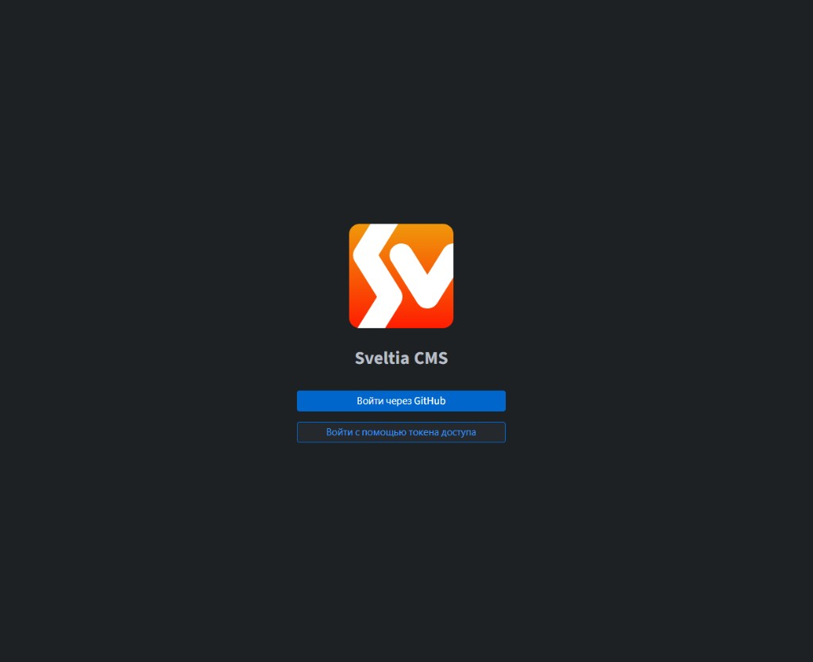
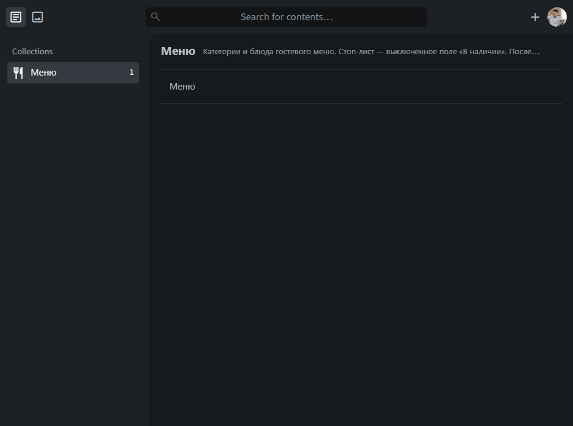
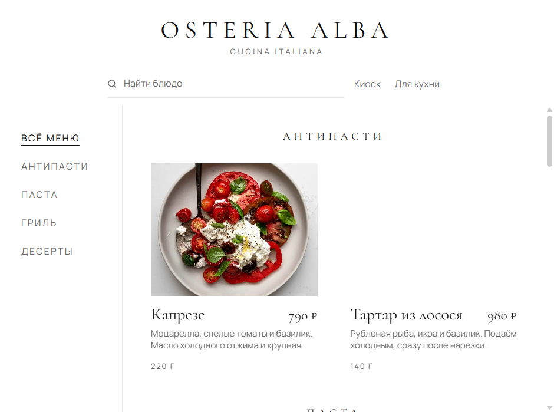
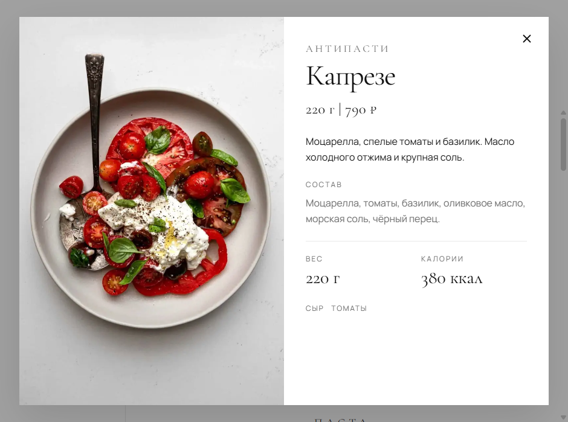
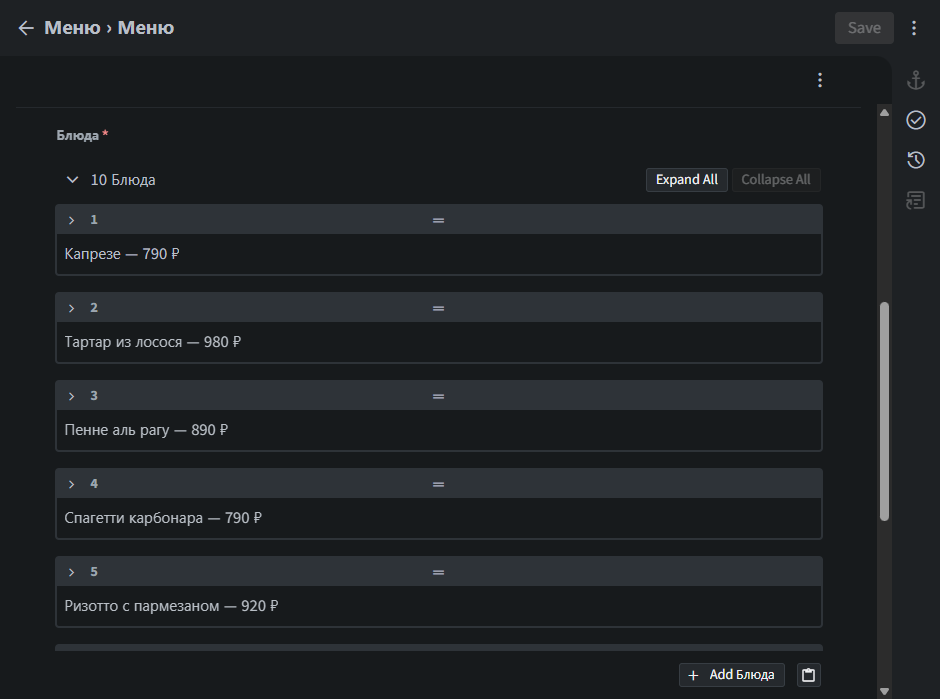
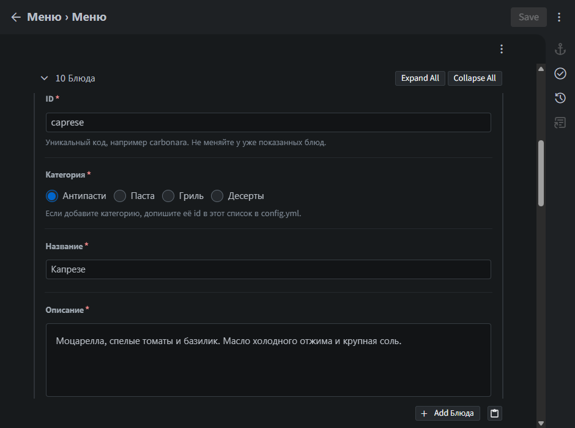
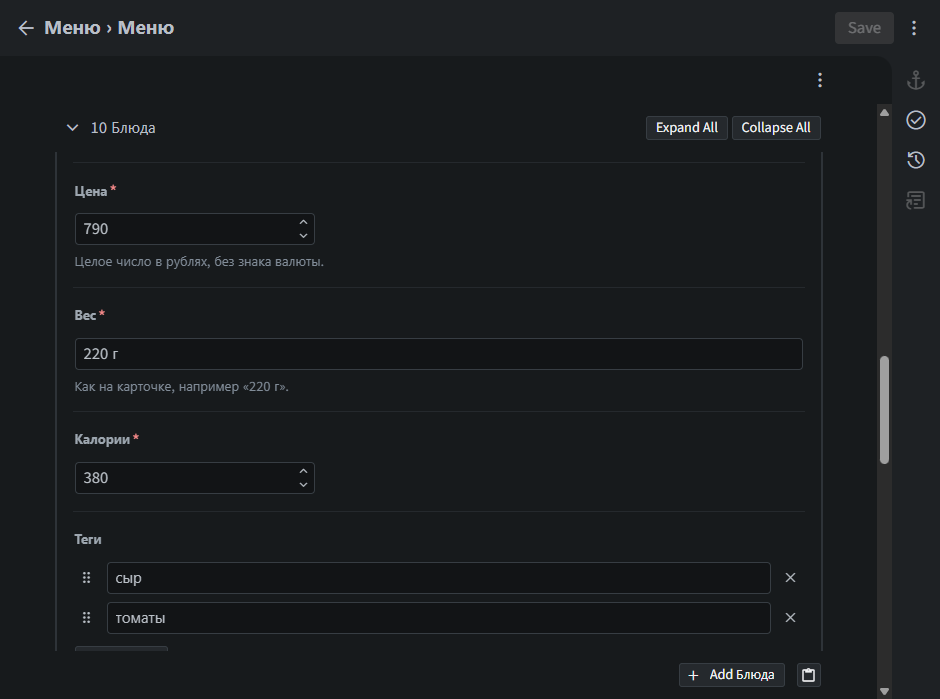
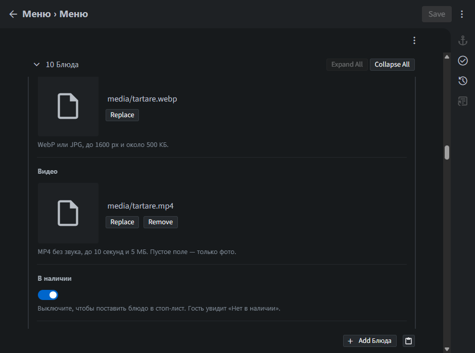
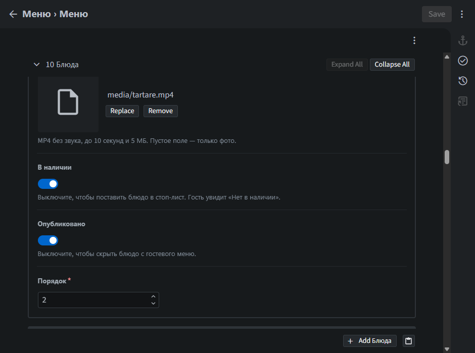
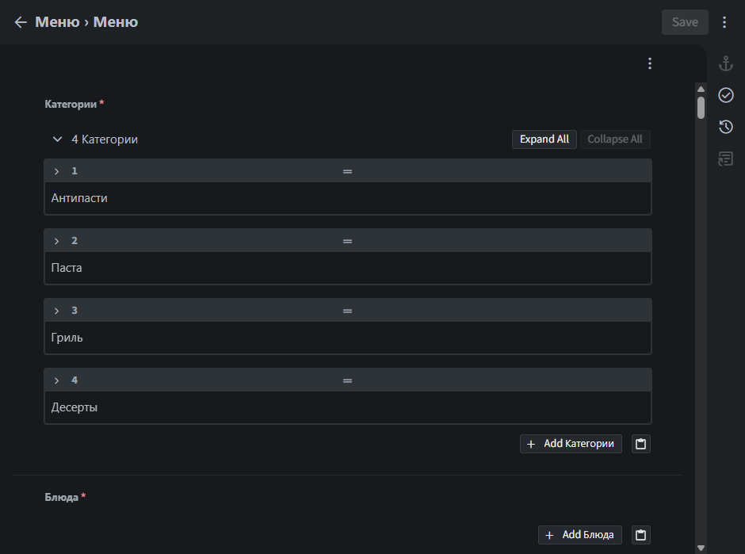

Osteria Alba
Как менять меню
Эту страницу можно открыть самой: на меню зала, рядом с «Для кухни», есть ссылка «Инструкция». В режиме киоска ссылки нет. Сначала нажмите «Закрыть киоск».
1. Войти
Админка открывается кнопкой «Для кухни» на меню зала. Прямой адрес: /admin/.
Синяя кнопка «Войти через GitHub» не нужна. Нажмите нижнюю: Войти с помощью токена доступа и вставьте токен. Его даёт тот, кто настраивал сайт.

Токен запоминается в этом браузере. На другом планшете вход нужно сделать ещё раз.
Если после правки вылезает окно «Resource not accessible by personal access token», этот токен умеет только смотреть меню, но не сохранять. Нужен новый, с правом записи. Пока такого токена нет, цена в зале не изменится.
2. Открыть меню
Слева коллекция Меню. В центре одна строка, тоже Меню. Нажмите на строку.

3. Что видит зал
На карточке в зале: фото, название, цена, короткое описание и вес. Категории слева.

Если нажать на блюдо, откроется карточка. Туда попадают состав, калории и теги. Видео играет на фото, если оно загружено.

4. Найти блюдо
В админке прокрутите до списка Блюда. Строка уже показывает название и цену, например «Капрезе — 790 ₽». Нажмите стрелку слева от номера, чтобы раскрыть.
Expand All раскрывает все блюда, Collapse All сворачивает. В русском браузере это «Развернуть все» и «Свернуть все».

5. Название, категория, описание

Ниже есть поле Состав. Оно видно только в открытой карточке, не на плитке в зале.
6. Цена, вес, калории
В цену пишите только число: 790, без знака рубля и без пробелов. Вес пишите так, как он должен читаться: 220 г.

7. Фото и видео
Replace у фото или видео заменяет файл. Remove у видео убирает ролик, на карточке остаётся фото. В русском браузере: «Заменить» и «Удалить».
Фото: WebP или JPG, примерно до 500 КБ. Видео: MP4 без звука, до 10 секунд и 5 МБ.

8. Стоп-лист и скрыть блюдо
Оба переключателя внизу того же блюда.
- В наличии выключен — блюдо остаётся в меню серым, с подписью «Нет в наличии».
- Опубликовано выключен — блюдо пропадает и из списка, и из поиска.
Порядок — место среди блюд этой категории. Меньше число, выше карточка. Перетаскивать строки в админке не нужно: зал смотрит только на это число.

9. Сохранить
Кнопка Save справа сверху. Пока ничего не изменено, она серая. В русском браузере она называется «Сохранить».
Одна кнопка сохраняет всё: и категории, и все блюда, и новые файлы. Нажимать её нужно один раз, в конце.

Зал не видит правку в ту же секунду. После Save подождите около минуты, пока сайт соберётся. Уже открытый экран в зале подхватит новую цену, текст, фото и видео сам. Если через пару минут всё ещё старое — обновите страницу меню.